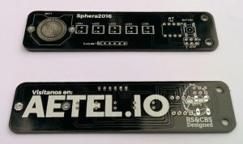
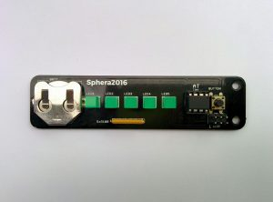
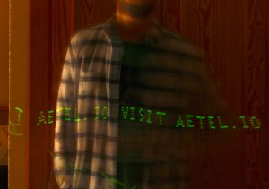

En ocasiones me sorprendo a mi mismo. A veces incluso para bien. La capacidad que tenemos los (proyecto de) ingenieros para imaginar algo y llevarlo a cabo es impresionante.
Ocurrió que nos encontrábamos organizando las Jornadas Sphera[1]. Los presidentes de las distintas asociaciones se habían reunido para repartirse el horario y el espacio en las neveras[2]. AETEL tenía tres actividades: una competición de minisumos[3], un vuelo de demostración de nuestro quadcopter y un taller de arduino.
Analizando las actividades uno notará que son todas bastante contemplativas. De hecho, en la única que habría que construir algo sería la competición de sumobots y los participantes debían hacerlo por su cuenta…
Siendo nuestra asociación sobre hacer cosas y enseñar a hacer cosas, me puse a darle al coco para remediar este problema. La gente tenía que construir algo. Quería que conocieran la sensación de ensamblar algo con tus manos, probarlo, ver que funciona y saber que lo has hecho tú con tu esfuerzo. Dándole al coco llegué a la conclusión de que estaría bien hacer un pequeño kit para soldar, barajé varias ideas y al final decidí junto con Carlos Berbell construir un pequeño display de persistencia de la visión. La idea era montar un kit sencillo, que llamara un poco la atención y que la gente pudiera montar gratis en cualquier momento durante las Jornadas Sphera.
Realicé el diseño electrónico en un trozo de papel en sucio mientras miraba el pinout del ATtiny85 en internet. El tiempo que teníamos era más bien escaso, así que le pedí a Carlos que diseñara la placa de circuito ya que yo habría tardado demasiado en hacerlo porque no tengo tanta soltura. Le pasé el esquemático y los dibujitos que quería poner y él realizó el diseño.

El reloj corría en nuestra contra, tuvimos que marcharnos a Elche para el CNR[4] pero conseguimos sacar un rato para encargar las placas a Elecrow[5] con envío express, pedir los componentes a Farnell[6] y las pilas por ebay.
Tras una agradable fin de semana rodeado de gente fantástica en Elche y habiendo hecho muchos contactos y amistades, regresamos a Campus Sur justo a tiempo para las Sphera. Por suerte Jota se había encargado de la demo del dron y Berbell de preparar la charla sobre arduino, eso me permitió poder centrarme plenamente en preparar el tema del display. Y menos mal.

La verdad es que como todo tuvo que ser tan rápido, mientras preparábamos varias cosas e incluso estando en Elche, que no habíamos tenido tiempo de probar el diseño. Vamos, que no habíamos hecho ni un maldito prototipo. Lo sé, lo sé, ahora estaréis pensando: “Menudo HINJENIERO de pacotilla; las cosas primero se prototipan y luego se manufacturan, no al revés.” y os doy la razón, pero hay veces que no te queda otra. Aprovechando que ya teníamos todos los componentes montamos la primera unidad para poder hacer pruebas. Gracias al bajo número de componentes no me llevó demasiado tiempo montarlo. Sin embargo programarlo fue otra historia.

Puesto que nunca había programado un micro ATMEL fuera de las cosas normales de arduino, primero tuve que montar un programador usando una placa arduino UNO, una protoboard y unos cuantos cables. Después tuve que instalar los descriptores adecuados para poder programar este micro concreto y luego pegarme con el código para que funcionara. Conseguir la funcionalidad básica de un display de persistencia de la visión no fue complicado, lo complicado fue leer el botón y mandar el micro a dormir para que no gastara la batería sin hacer nada, todo en unas cuantas horas y con poca (o ninguna) experiencia previa.
Por suerte, al final todo salió bien y alrededor de 50 alumnos de la escuela pudieron disfrutar de la experiencia de fabricar algo con sus propias manos.
Este artículo fue publicado en el número 16 de la revista TelekoSur editada por la Delegación de Alumnos de la ETSI Sistemas de Teleco
- Las Jornadas Sphera son una semana en la que las asociaciones de la escuela preparan mogollón de actividades y se dan a conocer.
- Las neveras son las aulas de examen de la escuela. Están en, bueno, son los bloques IX y X, y tienen ese sobrenombre porque por dentro son completamente blancas y dentro hace un frío del copón siempre.
- Los mini sumos son pequeños robots de lucha que intentan empujar al contrincante fuera de un Dojo.
- El Congreso Nacional de Ramas de Estudiantes del IEEE es una reunión anual de todas las ramas de estudiantes de la sección española del IEEE. Incluye charlas técnicas, visitas a lugares chulos y conocer a gente en tu misma onda.
- Elecrow es una tienda de componentes electrónicos con sede en Shenzhen, China, que tiene unos precios más que recomendables para placas de circuito impreso.
- Farnell es un distribuidor de componentes electrónicos europeo con sede en Reino Unido.